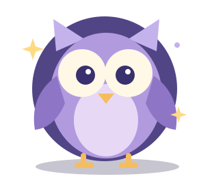

Sowa otwiera bibliotekę…
Do interaktywnych zadań potrzebny jest włączony JavaScript.
Postęp nauki i ostatni wynik zostają tylko w tej przeglądarce. Imienia nie zapisujemy. Na wspólnym urządzeniu inni użytkownicy tego profilu mogą zobaczyć zapisany postęp.
Wyniki testu nie są zabezpieczonym świadectwem. Wyczyszczenie danych przeglądarki usuwa zapis. Test rozpoczęty w tej karcie nie przetrwa odświeżenia.